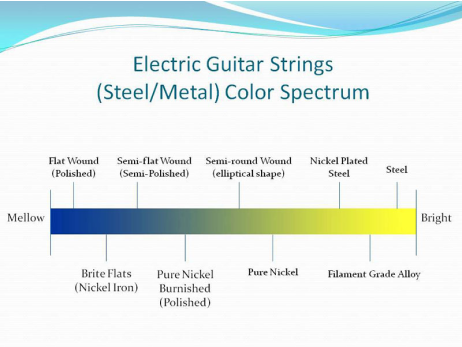

With the invention of the electric guitar and their magnetic pickups,
the traditional guitar string manufacturers of the day had to evolve
to keep up with this growing demand. However, since their arrival into
the mainstream, electric guitar strings have remained relatively the
same - as far as their basic composition and functionality.
From the String to Speaker
Since the sound output from electric guitar strings is driven
primarily by the magnetic properties of the materials in the
composition of the strings, highly magnetic steel has become the
standard for the core of these strings. Through electromagnetic
induction, the electric guitar strings’ interaction with the magnetic
pickups converts the strings’ vibrations into electrical impulses,
which are then amplified to reach the desired output of the player and
the intended audience.
Gauges and Tensions
There are numerous electric guitar string options that differ by
brands or manufactures, gauges or string tensions, material
composition, manufacturing techniques, and a variety of treatments or
coatings. All of these different string options were created to meet
the needs of an infinite variety of guitar players and playing styles.
The largest selection and most common types of electric guitar string
sets are for the 6-string guitar, but there are also many options for
electric 12-string guitars, 7-string guitars, 8-string guitars, and
Baritone guitars.
When deciding what type of electric guitar strings would work best for
your electric guitar, experimenting with and deciding on a string
gauge or tension is a good place to start. Heavy gauge strings are
often louder due to more steel and a greater vibrating mass for the
pickups to harness. However, heavy gauge strings can be much harder to
play and often require a slight adjustment to your guitar’s bridge so
that these thicker strings don’t cause fret buzz - which leads to a
higher action and more effort to play overall. On the other hand,
lighter gauge strings allow for your guitar’s action to be set up
lower and are also much easier to play and bend, but they are not as
loud as a heavier set.
The gauges (thickness) of the string are often detailed on the package
for easy comparison. They are usually written out starting with the
1st string to the 6th string on standard 6-string sets, (ie. 10 - 46).
Often, every string gauge is listed on the package along with the
associated categories of the gauges (ie. Light 9, 11, 16, 24, 32,
42).
There are also many other categories of in-between and custom gauge
sets that electric guitar string manufacturers supply to meet the
dynamic needs of the guitar players, such as Extra Light, Light,
Medium, Medium Heavy, and Heavy. These make it easier for players to
easily compare the different string gauge options, and help categorize
the gauges that players like for future buying.
Build Your Own
There are many guitar players that are so particular about the sound,
feel, style, etc… of their guitar strings, that they piece together
their own custom sets out of single electric guitar strings, and often
from different manufacturers. If you found your perfect set of
electric guitar strings from assembling your own custom set, you can
save and name your custom set to Melodic Strings’s “Custom Customer
Concoctions”. This allows you to share your research and infinite
wisdom with other electric guitar players, and also have the
opportunity to easily re-order your own Custom Customer Concoction at
a press of a button during your next order.
Sound and Tone
The feel and sound of electric guitar strings are further shaped and
enhanced by various manufacturing processes, outer string wrappings,
treatments and coatings, and the overall materials used in the
composition of the strings. Harder materials like plain steel strings
lend to an overall brighter sound and greater volume, however they can
tend to wear down a guitar’s frets and fretboard at a faster rate.
Electric guitar strings made with softer metals like 24k gold and pure
nickel can help produce warmer and more mellow sounding tones, and are
a much less abrasive on guitar’s frets. Some recent advances in string
materials, such as using cobalt, provides a higher magnetism to the
magnetic pickups, resulting in increased output and clarity.
Construction
There are a variety of other metals that are used in the
construction
of acoustic guitar strings, which help produce unique tonal
qualities
that many guitar players enjoy. Gold Plated acoustic guitar strings
are somewhat more expensive, but the superior qualities of the gold
help to make very long lasting strings with exceptional tonal
qualities. Nickel Wound acoustic guitar strings are a popular choice
for players who would rather hear the natural woody sounds of their
acoustic guitars. Other types of acoustic guitar strings incorporate
different materials into their core wires, such as silk and steel
and
silk and bronze, which help produce a more sweet and mellow tone,
with
a softer feel for easier playability. This chart shows where the
different types of strings lie on the spectrum from bright to mellow
sound.

The outer winding process that is most often used on electric guitar
strings is called Roundwound, which consists of a round wire that is
wrapped around the core and helps to produce a brighter and louder
tone.
Flatwound electric guitar strings utilize a flatter wrap wire around
the
core, and are favored by many for their lower profile and
comfortable
playing experience. These flatwound strings also help to eliminate
the
finger squeak sounds produced when sliding from note to note. Some
electric guitar strings are further manipulated with a finishing
process
that grinds down or polishes the outer windings, and some of the
more
common types are known as Half Rounds, or Burnished
Strings.
Many electric guitar strings have protective layers applied during
the
final manufacturing process, and these are known as treated and/or
coated strings. These thin coatings on the strings help protect them
from oxidation, dirt, and from the natural oils that comes from the
players’ fingers. These coated strings also tend to last much longer
due
to this protective layer, as it also seals the small gaps in between
the
string windings, however there is much discussion as to the effect
this
has on the strings’ tone.
Longevity
Speaking of tone, electric guitar strings do not last forever and
eventually the tone, sustain, and the feeling of the strings begin
to
deteriorate. This can occur from playing your strings too much and
simply wearing them out, and also from the dirt and oils from your
fingers that collect on the strings. Electric guitar strings can
also
deteriorate from not playing them at all, as the materials in the
strings oxidize from the moisture in the air, as well as the dust
that
can collect on them over time.
To keep your electric guitar sounding as good as possible and to
achieve
the fullest sonic potential from your instrument, fresh strings are
essential. New strings are also much easier to play and they stay in
tune much better. Experimenting with different strings is another
great
way to change the playability and to enhance the sound of your
electric
guitar, while you dial in your perfect tone. Like many guitarists,
electric guitar players sometimes do not even realize that their
strings
have degraded due to their relative judgment. The gradual changes in
their string quality over time often goes unnoticed, and the player
forgets how easy it can be to tune and play, and how inspirational
their
guitar can truly sound.
Feel free to use the following url for your website, blog or forum to
link to this informative page, content written by Melodic Strings:
https://www.stringsbymail.com/pages/electric-guitar-string-basics-22.html
If you are not sure whether you need acoustic, classical or electric
strings click here: Help Me Choose What Guitar Strings I
Need?
Also please visit our Melodic Strings Blog for more in depth
discussion on Electric Guitar Strings and related content. You may
also want to visit our General String Basics page for an overview on
issues regarding all string types.